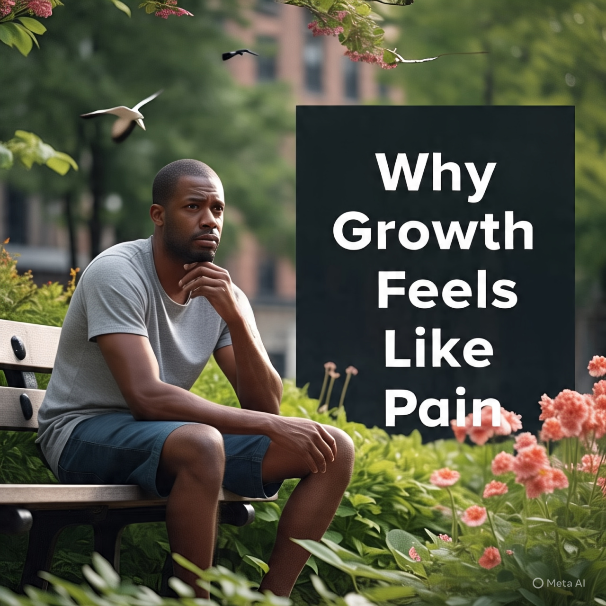

Why Growth Feels Like Pain First.

Growth is the quiet force that shapes who you become. It's the drive to understand yourself, fulfill your purpose, and live a life that feels true. But growth doesn't come softly. It comes like heaviness or a moment of doubt. That pain you feel when you're struggling to change isn't a sign you are failing, it's a prove you are becoming more. Let's explore why personal growth feels like pain first and how leaning into that discomfort helps you fulfill your potential.
Leaving the familiar behind
Growth begins when you step away from what's safe.
Take for example, you want to change something in your life, maybe you want to be more confident, start a new chapter, or break a bad habit. At first, it will feel like it's not possible, or you will feel stuck, you will feel like your doing the wrong thing. That unease is the pain of moving beyond what's comfortable.
It's like trying to speak up in a group when you are used to staying quiet, or setting boundaries when you've always said yes. That awkwardness, the fear of messing up, it's all part of leaving your old self behind. But every time you take that step, you carve out space for a stronger and truere version of you.
To ease into it, start small. If you want to grow, make it a priority to do what you need to do daily. For example, if you want to grow in confidence, practice one bold action per day, going out and walking up to people to know them.
Failure Shapes You
Failure hurts. When you try something new, and it dorsn't work out, it will definitely make you feel sad, embarrased, or tempted to give up. But those hard moments are where growth takes hold. Failure teaches lessons that succes never could.
Maybe you poured you heart into a project and it flopped, but you learned what you'd do differently.
Every stumble shows something new about your self. The pain of failing isn't the end; it's a guide to a better way.
To make failure feel less heavy, think of it as a teacher.
Instead of dwelling on what went wrong, ask yourself: Everything happens for a reason, what has this taught me?
Shedding Old Pieces Of Yourself
Growth often feels like loosing something. To become who you're meant to be, you have to let go of who you were. Maybe it's a belief that you're not good enough, or a habit of putting others first. Letting go is painful because it's vulnerable. You're dismantling parts of your identity to make room for something new.
Growth comes with an an habbit of shedding yourself. That process of shedding can feel raw, but it's how you make room for your true self.
To move through it, notice one thing holding you back, then replace it with a small action. Each action you take brings you closer to who you're becoming.
Efforts Hurts Less Than Regrets
Growth takes work, and work can feel heavy. It's tempting to stay where things are simple and familiar. But the pain of efforts will pass, while the pain of regret is greater, that's where depression comes in, thinking you're not whre you're supposed to be, or if i had known, i would have don that stuff. Avoid regrets and grow!!!
Think about it in this way, if you're planting seeds, or pulling weeds, it's tiring right? But it leads to something alive and beautiful anyways. That's just how growth works. The hours you spend praying, reflecting, learning, or pushing yourself to build a life you would be proud of in the future. Every choice to show up for yourself adds up, shaping a future that feels full.
To start, try the two-minute trick. Begin any growth task, like writing about your goals , or practicing mindfulness for just two minutes daily. Starting is the hardest part, and you'll often keep going once you start. So just Start!!!
Pain Signals Something New
The toughest moments often come right before a shift.
When you're wrestling with doubt, pushing through fear, or sitting with discomfort, it feels heavy. But that heaviness is a sign you're close to something real. It's your heart and mind stretching, reaching for a new version of you.
The struggle right before the win is where growth lives. When the pain feels sharpest, you're often one step from the success you've been working towards, so don't give up!
To keep going, look back at how far you've come. Seeing your progress reminds you that the pain is temporary and the growth is real.
Making Peace With The Pain
Growth isn't soft, but you can make it feel less overwhelming. Start by accepting that discomfort is part of the deal. Feeling unsure or scared doesn't mean you're failing, it means you're growing. Next, give your pain a purpose. Set a goal that matters to you. Knowing why you're pushing makes the struggle feel worthwhile.
Find people who understands your struggles, which means get a mentor. And don't skip the small victories.
Those moments recharge you for the road ahead.
Pain Is The Path To Your Potential
Growth feels like pain first because it's the cost of becoming who you're meant to be. Every moment is pain is shaping you into someone stronger, wiser, and more alive. Don't shy away from it. Step into it. Learn from it. Keep moving. The pain won't last, but the person you become will.
Thanks for reading.
If this resonated with you, please do well to share it with someone who might need it.